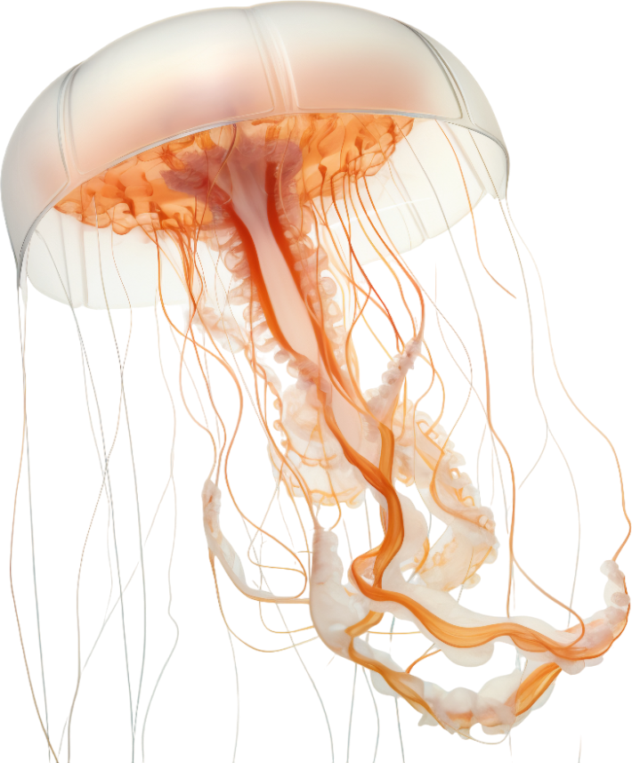

Las medusas son algunos de los organismos más antiguos que habitan en el planeta Tierra, donde están presentes desde hace más de 500 millones de años. Se trata de un grupo de animales marinos invertebrados que se engloba dentro del filo de los Cnidarios. Poseen un cuerpo gelatinoso en forma de campana del que salen los tentáculos y el tronco, de forma tubular. Las diferentes subespecies son muy diversas en cuanto al tamaño y color que las caracteriza. Incluso algunos tipos de medusa son bioluminiscentes. Se desplazan de manera muy lenta aunque elegante, de hecho se cree que las corrientes marinas son un factor clave para sus desplazamientos. A pesar de que no son capaces de vivir más allá de los 6 meses aproximadamente, los expertos creen que han sobrevivido a lo largo de tanto tiempo gracias a su capacidad de reproducirse sin necesidad del sexo opuesto. Se ha descubierto un tipo de medusa inmortal que puede volver a una fase pre maduración y de ahí empezar de nuevo su ciclo vital.